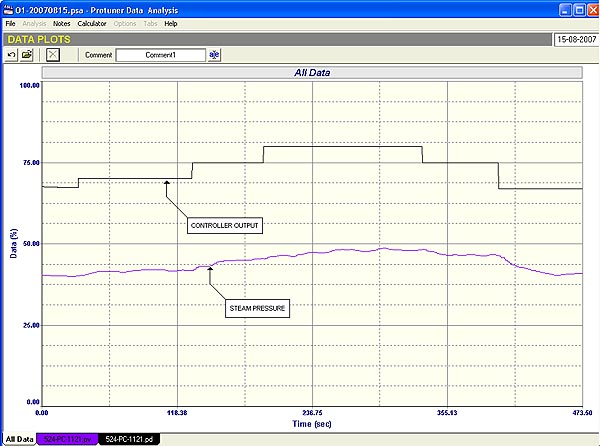
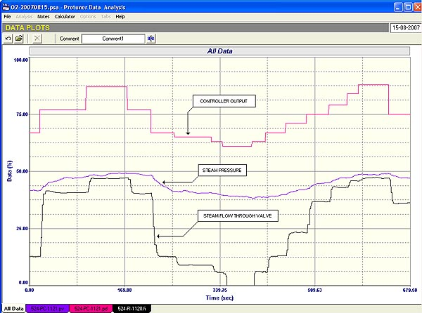
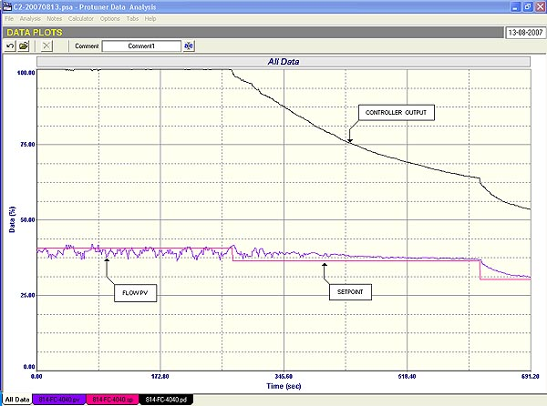
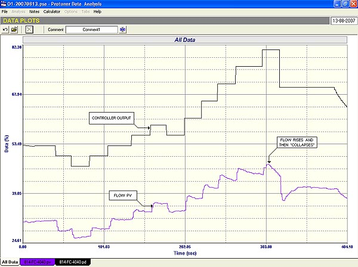
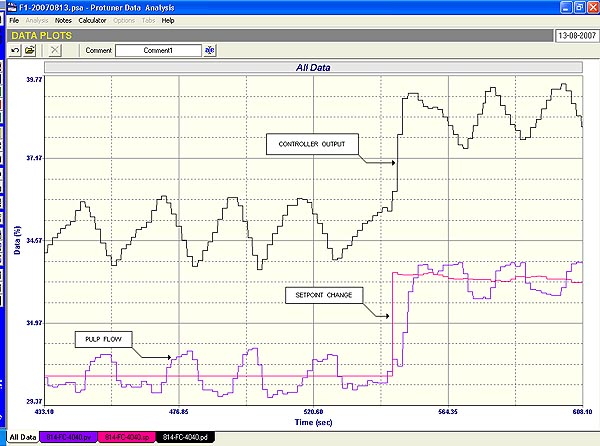

|
| [Home] [About us] [Contact us] [Training] [Optimisation services] [Protuner] |
| [Loop signatures] [Case histories] |
|
Control Loop Case History 98 FLOW SIGNAL REVEALS ALL I was recently doing some work with some optimisation trainees in a paper mill, and we encountered several interesting things. The first of these was when working on an important steam pressure control loop that had not been performing satisfactorily.  Fig 1 Figure 1 shows an open loop test where step changes on the controller output do not result in very satisfactory and repeatable steps on the steam pressure (process variable). The test showed little except that the pressure was not responding properly to changes in the controller’s output. Fortunately there was a steam flow indicator in series with the valve, so the test was repeated this time also with a recording of the steam flow. This is shown in Figure 2.  Fig. 2 The reasons for the poor steam pressure performance were immediately highlighted by the flow recording which revealed three really important problems: 1. The flow dropped to zero when the controller output was at 60%. Providing the flowmeter was correctly calibrated, this would show that the valve stroking has not been calibrated correctly. This system has a split range system in it for a pressurising stage, and a depressurising stage. The valve under the test should have started opening at a controller output of 50%. A large gap in a split range system could mean huge bumps in the control, as the valves swap over.. 2 and 3: Equal step changes in the controller output did not result in equal step changes in the flow and two conclusions can be drawn from an examination of the graphs: It would have been extremely difficult if not impossible to have diagnosed all the problems if there had not been a measurement showing what the flow though the valve was doing. I believe it is really important on critical loops with a relatively slow response to have a measurement of the flow through the valve so one can really see what is going on in the loop. Of course, if you do have such a flowmeter, then one should also use a cascade secondary flow control loop, so that the critically important primary controller (in this case the steam pressure controller) then asks the faster secondary controller to ensure that the correct amount of process input (in this case steam) is actually passed into the process. It effectively goes very far down the line in eliminating valve problems from the primary loop. In this example, it would have taken care of the non-linearity, and incorrect valve stroking. It would also have made it very easy to see the utility saturation problem. Another interesting problem that we came across during the training, was a good example of controller wind-up. Figure 3 shows a closed loop test on a pulp flow. At the start of the test it can be seen that the flow was slightly below setpoint, and the controller output was at 100%.  Fig. 3 The setpoint was then reduced by 5%. The flow was now above setpoint but didn’t start coming down quickly as could be expected. The controller output did start ramping down very slowly. When the output reached about 75% the flow then also started reducing very slowly. A second setpoint change was made and the flow this time responded, albeit relatively slowly.  Fig. 4 The open loop test shown in Figure 4 is very interesting. During the first half of the test where the controller output was fairly low down, the equal step-changes in the controller output resulted in fairly good responses in the flow. However once the output increased past about 60%, the flow response started overshooting, and then coming down again slowly. Also the higher the output went the smaller the flow steps and the larger the reversal after the overshoot. Eventually at about 80% output, it became impossible to actually increase the flow. There could be several reasons for the strange responses seen at higher flows. I have seen similar things in the past on flows of high density pulps, due to dewatering on step changes, but in this case where the pulp was of lower density, it is very likely that there is a problem with the valve positioner (see below). Again there would also appear to a utility saturation problem as the flow could not be increased past a certain point  Fig. 5 Figure 5 shows a “final” closed loop test with good, but fairly slow tuning. It can be seen that the loop is cycling. Most people immediately blame closed loop cycling on bad tuning. They then slow down the tuning until the cycle stops. This generally works, but remember that the ultimate way to stop cycling is to put the controller into manual. So effectively what these people are doing, is detuning the controller towards manual. This stops the cycle but also destroys the effectiveness of the control. In fact what they do not realise is that cycling can be caused by many factors other than unstable tuning. One way to check this is to ascertain the Ultimate Period of the loop, as loops with unstable tuning will generally cycle close to the Ultimate Frequency. In this case the loop is a flow loop, and has an Ultimate Period of about 6 seconds. The period of the actual cycle is about 24 seconds, so it is not poor tuning. Another thing to look at is the “waveform” of the cycle. Ultimate cycling is pretty close to sinusoidal waveforms on both the PV and the PD (controller output). In this case there is an interesting pattern on the cycles. The PV has an almost “squarish” waveform, whilst the PD is in a very definite “saw-tooth” waveform. These patterns are invariably due to the valve sticking on reversals, and the controller then integrating the error to try and get the valve back to the correct position. This is sometimes referred to as a “stick-slip” cycle, and it is mainly found on fast self-regulating processes like flows. Stick-slip cycling is normally caused by one of two things. The first is an inherent “stick-slip” characteristic in certain valves. This has been covered in detail in Loop Signature Part 1-8 available outside Southern Africa on my CD “Basic Trouble Shooting and Loop Tuning. The second reason is the cycle is caused by positioner problems particularly when the positioner causes an overshoot on a step change. This is almost definitely the reason for the cycle in this case, and the positioner needs checking.. In the next Case History which should be published in two months time, we shall look at some other interesting problems encountered in the same plant. Michael
Brown is a specialist in control loop optimisation, with many years of
experience in process control instrumentation. His main activities are
consulting, and teaching practical control loop analysis and
optimisation. He gives training courses which can be held in clients'
plants, where students can have the added benefit of practising on live
loops. His work takes him to plants all over South Africa, and also to
other countries. He can be contacted at:
|